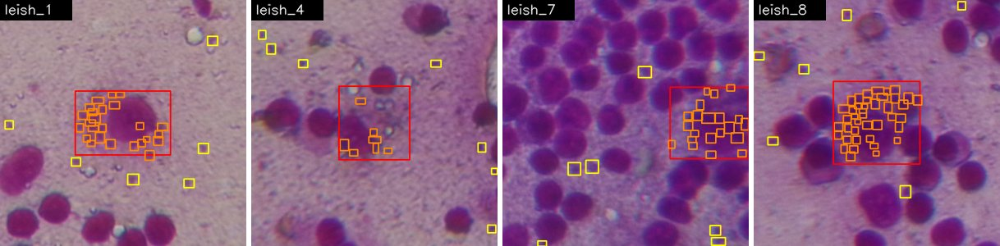

exp01 — YOLO11n, recorte original
| Modelo | YOLO11n (2,6M) |
| Entrada | recorte original RGB |
| Hiperparâmetros | imgsz 512, 100 ép., patience 30, batch 16, optimizer auto, aug padrão |
| Validação | 6 folds por lâmina (5 de treino, 1 de validação e 2 de teste), a mesma divisão de todos os experimentos |
Resultado
Conjunto de teste, média ± desvio padrão nos 6 folds.
| Precisão | Recall | mAP50 | mAP50-95 |
|---|---|---|---|
| 0,474 ± 0,116 | 0,501 ± 0,078 | 0,439 ± 0,123 | 0,170 ± 0,046 |
Detalhes
Objetivo
Primeira linha de base: detector de classe única de leishmania fora do macrófago, treinado nos recortes 512×512 centrados em macrófagos infectados, com o macrófago visível. As anotações de macrophage e inside-macrophage são ignoradas.
O que foi feito
- Configuração padrão do Ultralytics:
yolo11n.pt(2,6M parâmetros), imgsz 512, 100 épocas, patience 30, batch 16,optimizer=auto, aumento de dados padrão (hsv_h 0,015, sem rotação, sem mixup).
Exemplo da entrada

Por lâmina (mAP50)
Melhor: leish_7 (0,629). Pior: leish_4 (0,173). leish_3: 0,256.
Épocas por fold (total / melhor)
fold 1: 54/24 · fold 2: 45/15 · fold 3: 61/31 · fold 4: 100/81 · fold 5: 50/20 · fold 6: 75/45
Observações
- O fold 4 chegou ao limite de 100 épocas sem parar por early stopping (melhor época: 81), então poderia ter treinado mais.
- Ficou como a referência dos experimentos com o macrófago visível: nenhum dos exp02–07 o superou na média.
Período: 21 jun. 2026 · Notebook: 03_experimentos anteriores/exp01_yolo11n/deteccao_yolov11nano.ipynb
mAP50 por lâmina
Média entre os folds em que a lâmina caiu no teste.
| Lâmina | mAP50 |
|---|---|
| leish_1 | 0,393 |
| leish_2 | 0,359 |
| leish_3 | 0,256 |
| leish_4 | 0,173 |
| leish_5 | 0,523 |
| leish_7 | 0,629 |
| leish_8 | 0,326 |
| leish_9 | 0,442 |